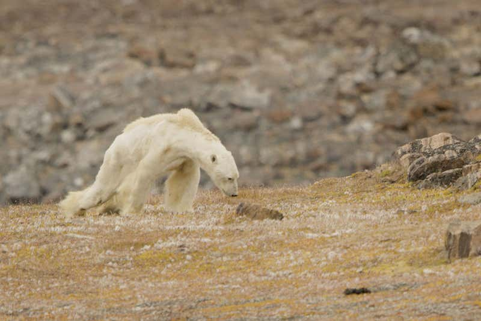
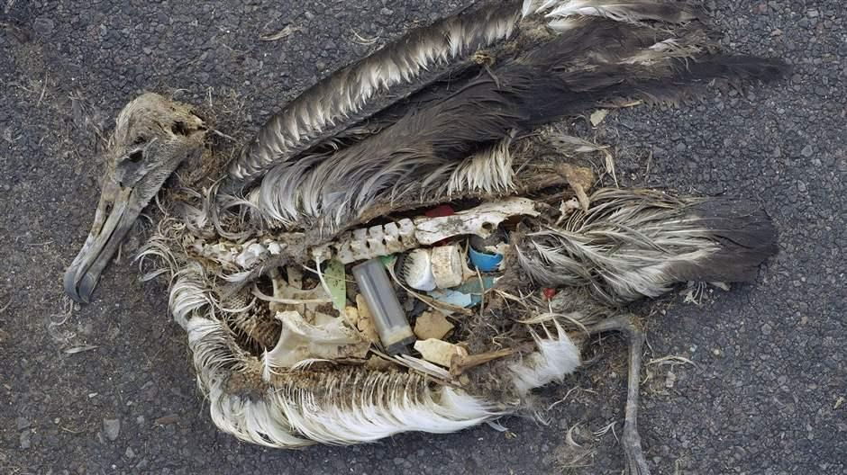
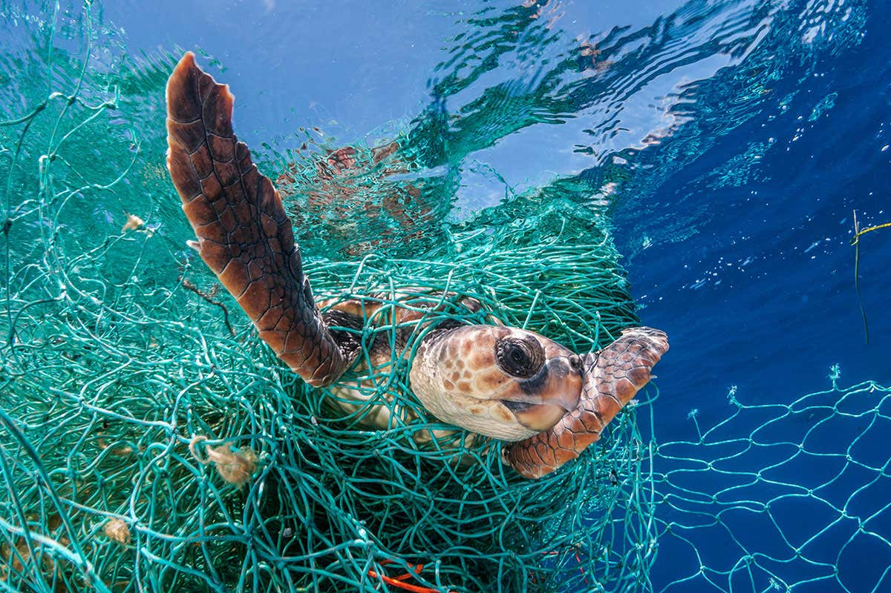
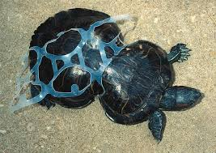
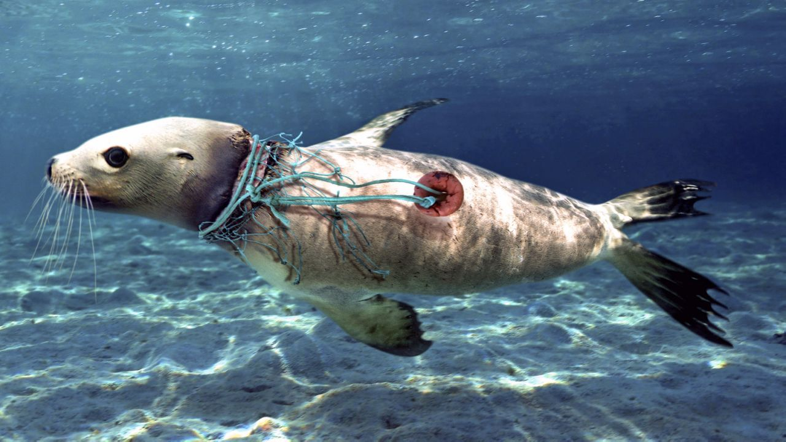
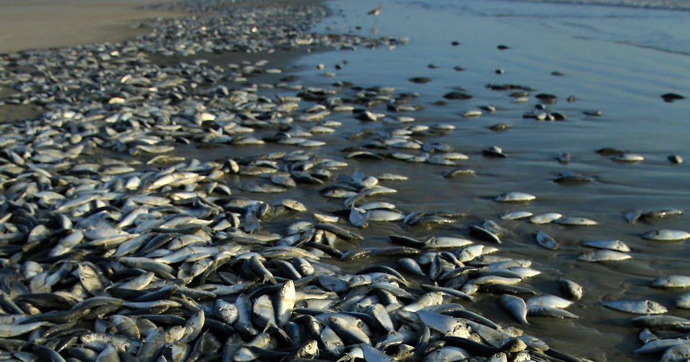

Mother Earth was born October 23, 4004BC. She was born right after The Big Bang. Things started off kind of slow for her, while they were slow, that doesn't mean it didn't help her become who she is today. She got help from some friends throughout her journey. Sun was born shortly after Mother Earth, she helped Mother Earth stay warm. Meteors came together to help build her up and supply her water, but someone was needed to control water. That is when Moon came along. They make the most perfect trio. It was only a short amount of time after her friends came, that Mother Earth had her first heartbreak, but after 400 million years her heart was finally whole again. Forming what we know as a super-continent. Mother Earth starts to create life, with help from her friends, of course. The oceans are filled with many organisms. Plants start to form as well, with help of algae from the oceans. Mother Earth forms a special bond with Ozone, which makes life start to boom. Animals from the ocean are starting to come to the land, small animals are growing bigger and bigger some eventually becoming giant. Plants are spreading like wildfire. Earth has already been through four mass extinctions as this point. Of course Mother Earth is devastated by this, her heart breaks once again. All of the dead organisms begin to deposit into the ocean floors, creating what we know as oil. One of the best and worst things to happen to Mother Earth. After all of that, she still manages to bounce back. Life once again starts to boom, there is major diversity forming within the wildlife, plants, animals, everything. She's glowing. Then, Human came along.
Mother Earth has been through a lot. She has had a lot of bad things happen to her throughout the years. These are the first times that bad things have been caused by someone else. Human started off by being Mother Earth's friend, they helped one another. Coexisted. Human discovered oil, things started to expand more for Human. Human's life changed majorly over a very short period of time, all thanks to Mother Earth's resources. Mother Earth was very generous and continued to give her resources. Eventually Mother Earth had enough, but Human hadn't so they started to take these things away from Mother Earth. Mother Earth soon started to display signs of sickness. She tried to fight back but she was too sick. Mother Earth is still sick, animals being declared extinct at a rapid pace. Human leaves their trash everywhere. Mother Earth is beginning to act more and more strange as the days go by. Human still doesn't care. They still continue to take Mother Earths resources. What they don't realize is that without Mother Earth, Human will not survive. Mother Earth needs help. Human is the only one that can save her.
|  |  |
|---|---|
|  |  |
|  |  |